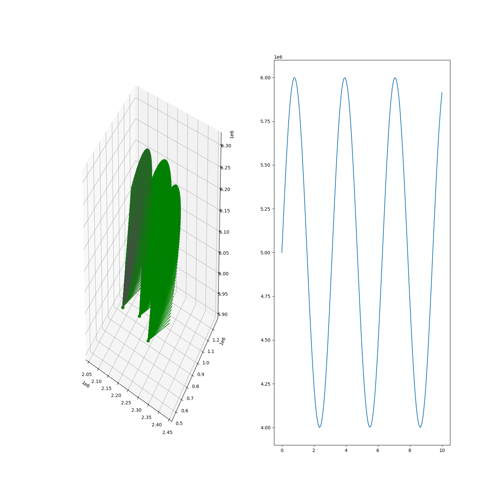

Note
Click here to download the full example code
Custom radar controller¶

import numpy as np
import matplotlib.pyplot as plt
from mpl_toolkits.mplot3d import Axes3D
from matplotlib.animation import FuncAnimation
import sorts
from sorts.radar.scans import Fence
import sorts
eiscat3d = sorts.radars.eiscat3d
from sorts import RadarController
scan = Fence(azimuth=90, num=100, dwell=0.1, min_elevation=30)
class MyController(RadarController):
'''
'''
def __init__(self, radar, scan):
super().__init__(radar)
self.scan = scan
self.p0 = [tx.power for tx in radar.tx]
self.duty_cycle_func = lambda t, p0: (1+0.2*np.sin(t*2.0))*p0
def generator(self, t):
for ti in range(len(t)):
RadarController.point(self.radar, self.scan.enu_pointing(t[ti]))
for tx, p0 in zip(self.radar.tx, self.p0):
tx.power = self.duty_cycle_func(t[ti], p0)
yield self.radar, self.default_meta()
e3d = MyController(radar = eiscat3d, scan=scan)
t = np.linspace(0,10,num=120, dtype=np.float64)
fig = plt.figure(figsize=(15,15))
ax = fig.add_subplot(121, projection='3d')
ax2 = fig.add_subplot(122)
for tx in e3d.radar.tx:
ax.plot([tx.ecef[0]],[tx.ecef[1]],[tx.ecef[2]],'or')
for rx in e3d.radar.rx:
ax.plot([rx.ecef[0]],[rx.ecef[1]],[rx.ecef[2]],'og')
pw = np.zeros((len(t),))
for mrad, ti in zip(e3d(t),range(len(t))):
radar, meta = mrad
pw[ti] = radar.tx[0].power
for tx in radar.tx:
point = tx.pointing_ecef*400e3 + tx.ecef
ax.plot([tx.ecef[0], point[0]], [tx.ecef[1], point[1]], [tx.ecef[2], point[2]], 'm-')
for rx in radar.rx:
point = rx.pointing_ecef*400e3 + rx.ecef
ax.plot([rx.ecef[0], point[0]], [rx.ecef[1], point[1]], [rx.ecef[2], point[2]], 'g-')
ax2.plot(t, pw)
# ax.set_xlim([e3d.radar.tx[0].ecef[0]-600e3, e3d.radar.tx[0].ecef[0]+600e3])
# ax.set_ylim([e3d.radar.tx[0].ecef[1]-600e3, e3d.radar.tx[0].ecef[1]+600e3])
# ax.set_zlim([e3d.radar.tx[0].ecef[2]-600e3, e3d.radar.tx[0].ecef[2]+600e3])
plt.show()
Total running time of the script: ( 0 minutes 0.914 seconds)